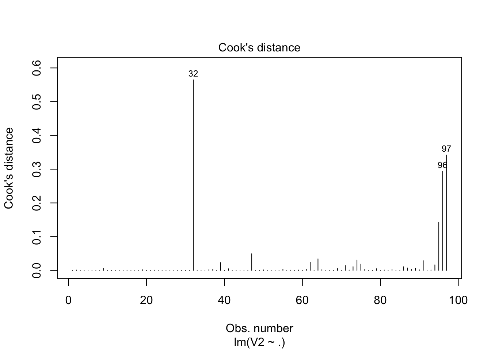

Project #1
Wenqiang Feng
2/2/2017
library(ggplot2)
library(plyr)
library(gplots)
library(asbio)
library(corrplot)
library(car)
library(MASS)
library(caret)
library(lmtest)
library(gvlma)Load data
C5 <- read.table("./data/APPENC05.txt")
data = C5[,2:9]
y=C5[,2]
X=C5[,3:9]Problem 1
- Stem-and-Leaf Plot
stem(X$V3)##
## The decimal point is 1 digit(s) to the right of the |
##
## 0 | 00000111111111111111222222222222333333333334444444444
## 0 | 555555666666778888889
## 1 | 01233444
## 1 | 55667788
## 2 | 033
## 2 | 67
## 3 | 2
## 3 |
## 4 |
## 4 | 6stem(X$V4)##
## The decimal point is 2 digit(s) to the right of the |
##
## 0 | 11222222222223333333333333333333333333333334444444444444444444
## 0 | 55555555555555555566666667778889
## 1 | 12
## 1 |
## 2 |
## 2 |
## 3 |
## 3 |
## 4 |
## 4 | 5stem(X$V5)##
## The decimal point is 1 digit(s) to the right of the |
##
## 4 | 134
## 4 | 779
## 5 | 0024
## 5 | 6778888999
## 6 | 000001111122233333334444444
## 6 | 555555566666677788888888888899999
## 7 | 000012222334
## 7 | 67789stem(X$V6)##
## The decimal point is at the |
##
## 0 | 000000000000000000000000000000000000000000046602366666899
## 2 | 66156667999
## 4 | 13478012355558899
## 6 | 26159
## 8 | 338
## 10 | 1333stem(X$V7)##
## The decimal point is 1 digit(s) to the left of the |
##
## 0 | 00000000000000000000000000000000000000000000000000000000000000000000
## 2 |
## 4 |
## 6 |
## 8 |
## 10 | 000000000000000000000stem(X$V8)##
## The decimal point is at the |
##
## 0 | 00000000000000000000000000000000000000000000044444557777779112234466
## 2 | 222337779
## 4 | 388138
## 6 | 288
## 8 | 28
## 10 | 33277
## 12 | 2
## 14 | 3
## 16 |
## 18 | 2stem(X$V9)##
## The decimal point is 1 digit(s) to the left of the |
##
## 60 | 000000000000000000000000000000000
## 62 |
## 64 |
## 66 |
## 68 |
## 70 | 0000000000000000000000000000000000000000000
## 72 |
## 74 |
## 76 |
## 78 |
## 80 | 000000000000000000000- Correlation matrix
M = cor(X)
M## V3 V4 V5 V6 V7
## V3 1.000000000 0.005107148 0.03909442 -0.13320943 0.581741687
## V4 0.005107148 1.000000000 0.16432371 0.32184875 -0.002410475
## V5 0.039094423 0.164323714 1.00000000 0.36634121 0.117658038
## V6 -0.133209431 0.321848748 0.36634121 1.00000000 -0.119553192
## V7 0.581741687 -0.002410475 0.11765804 -0.11955319 1.000000000
## V8 0.692896688 0.001578905 0.09955535 -0.08300865 0.680284092
## V9 0.481438397 -0.024206925 0.22585181 0.02682555 0.428573479
## V8 V9
## V3 0.692896688 0.48143840
## V4 0.001578905 -0.02420693
## V5 0.099555351 0.22585181
## V6 -0.083008649 0.02682555
## V7 0.680284092 0.42857348
## V8 1.000000000 0.46156590
## V9 0.461565896 1.00000000corrplot(M, type="upper")
- From the above Correlation matrix plot, we can conclude that the V3 is highly correlative with V7, V8 and V9, V7 is highly correlative with V8. Hence i will revome V3 and V8.
Problem 2
- linear fitting
data2 = data[,c(1,3:6,8)]fit <- lm(V2~., data=data2)summary(fit)##
## Call:
## lm(formula = V2 ~ ., data = data2)
##
## Residuals:
## Min 1Q Median 3Q Max
## -54.396 -11.101 -2.597 4.607 194.427
##
## Coefficients:
## Estimate Std. Error t value Pr(>|t|)
## (Intercept) -48.31074 43.22326 -1.118 0.26664
## V4 0.03030 0.08036 0.377 0.70700
## V5 -0.67654 0.51670 -1.309 0.19371
## V6 0.84190 1.30234 0.646 0.51961
## V7 42.84222 9.40561 4.555 1.62e-05 ***
## V9 14.90066 5.29694 2.813 0.00601 **
## ---
## Signif. codes: 0 '***' 0.001 '**' 0.01 '*' 0.05 '.' 0.1 ' ' 1
##
## Residual standard error: 33.93 on 91 degrees of freedom
## Multiple R-squared: 0.3437, Adjusted R-squared: 0.3077
## F-statistic: 9.532 on 5 and 91 DF, p-value: 2.452e-07par(mfrow=c(2,2)) # init 4 charts in 1 panel
plot(fit)- Check the data for potential influential observations
cd<-which(cooks.distance(fit)>3.0)
covr<-which(covratio(fit)>2.0)
rst<-which(abs(rstudent(fit))>4)
index<-sort(unique(c(cd,covr,rst)))
index## [1] 32 96 97plot(fit, which=4)
abline(h=3.0, col="blue", lty=3)
- From the above analysis with the given criteria, we can conclude that obervation 32, 96, 97 are probability be the potential influential observations.
Problem 3
- Check for Multicollinearity problems, and identify any variables that are involved in creating multicollinearity.
vif_func<-function(in_frame,thresh=10,trace=T,...){
require(fmsb)
if(class(in_frame) != 'data.frame') in_frame<-data.frame(in_frame)
#get initial vif value for all comparisons of variables
vif_init<-NULL
var_names <- names(in_frame)
for(val in var_names){
regressors <- var_names[-which(var_names == val)]
form <- paste(regressors, collapse = '+')
form_in <- formula(paste(val, '~', form))
vif_init<-rbind(vif_init, c(val, VIF(lm(form_in, data = in_frame, ...))))
}
vif_max<-max(as.numeric(vif_init[,2]), na.rm = TRUE)
if(vif_max < thresh){
if(trace==T){ #print output of each iteration
prmatrix(vif_init,collab=c('var','vif'),rowlab=rep('',nrow(vif_init)),quote=F)
cat('\n')
cat(paste('All variables have VIF < ', thresh,', max VIF ',round(vif_max,2), sep=''),'\n\n')
}
return(var_names)
}
else{
in_dat<-in_frame
#backwards selection of explanatory variables, stops when all VIF values are below 'thresh'
while(vif_max >= thresh){
vif_vals<-NULL
var_names <- names(in_dat)
for(val in var_names){
regressors <- var_names[-which(var_names == val)]
form <- paste(regressors, collapse = '+')
form_in <- formula(paste(val, '~', form))
vif_add<-VIF(lm(form_in, data = in_dat, ...))
vif_vals<-rbind(vif_vals,c(val,vif_add))
}
max_row<-which(vif_vals[,2] == max(as.numeric(vif_vals[,2]), na.rm = TRUE))[1]
vif_max<-as.numeric(vif_vals[max_row,2])
if(vif_max<thresh) break
if(trace==T){ #print output of each iteration
prmatrix(vif_vals,collab=c('var','vif'),rowlab=rep('',nrow(vif_vals)),quote=F)
cat('\n')
cat('removed: ',vif_vals[max_row,1],vif_max,'\n\n')
flush.console()
}
in_dat<-in_dat[,!names(in_dat) %in% vif_vals[max_row,1]]
}
return(names(in_dat))
}
}vif_func(in_frame=X,thresh=4,trace=T)## Loading required package: fmsb## var vif
## V3 2.16260575041746
## V4 1.12894126727313
## V5 1.24048938465825
## V6 1.31117777017478
## V7 2.00933072949621
## V8 2.51634553896314
## V9 1.45870140337424
##
## All variables have VIF < 4, max VIF 2.52## [1] "V3" "V4" "V5" "V6" "V7" "V8" "V9"NewData = data2[-c(index),]
fit <- lm(V2~., data=NewData)# Evaluate Collinearity
vif(fit) # variance inflation factors ## V4 V5 V6 V7 V9
## 1.599769 1.249200 1.634566 1.235077 1.245702vif(fit) > 4 # problem?## V4 V5 V6 V7 V9
## FALSE FALSE FALSE FALSE FALSEProblem 4
- Check for problems with heteroscedasticity.
- Breusch-Pagan test
lmtest::bptest(fit)##
## studentized Breusch-Pagan test
##
## data: fit
## BP = 14.2, df = 5, p-value = 0.01439- Breusch-Pagan test
car::ncvTest(fit) ## Non-constant Variance Score Test
## Variance formula: ~ fitted.values
## Chisquare = 102.4705 Df = 1 p = 4.378427e-24With a p-value of are less than 0.05, we reject the null hypothesis (that variance of residuals is constant) and therefore infer that ther residuals are not homoscedastic.
- Alterative method: The gvlma( ) function in the gvlma package, performs a global validation of linear model assumptions as well separate evaluations of skewness, kurtosis, and heteroscedasticity.
gvmodel <- gvlma(fit)
summary(gvmodel)##
## Call:
## lm(formula = V2 ~ ., data = NewData)
##
## Residuals:
## Min 1Q Median 3Q Max
## -32.472 -8.442 -1.590 4.551 113.250
##
## Coefficients:
## Estimate Std. Error t value Pr(>|t|)
## (Intercept) -9.6969 23.7474 -0.408 0.68402
## V4 0.2343 0.1253 1.869 0.06489 .
## V5 -0.7839 0.2842 -2.759 0.00706 **
## V6 -0.2332 0.8024 -0.291 0.77201
## V7 25.7531 5.2755 4.882 4.66e-06 ***
## V9 9.3938 2.9409 3.194 0.00195 **
## ---
## Signif. codes: 0 '***' 0.001 '**' 0.01 '*' 0.05 '.' 0.1 ' ' 1
##
## Residual standard error: 18.48 on 88 degrees of freedom
## Multiple R-squared: 0.4261, Adjusted R-squared: 0.3935
## F-statistic: 13.07 on 5 and 88 DF, p-value: 1.625e-09
##
##
## ASSESSMENT OF THE LINEAR MODEL ASSUMPTIONS
## USING THE GLOBAL TEST ON 4 DEGREES-OF-FREEDOM:
## Level of Significance = 0.05
##
## Call:
## gvlma(x = fit)
##
## Value p-value Decision
## Global Stat 1168.18 0.000e+00 Assumptions NOT satisfied!
## Skewness 132.62 0.000e+00 Assumptions NOT satisfied!
## Kurtosis 961.49 0.000e+00 Assumptions NOT satisfied!
## Link Function 14.91 1.125e-04 Assumptions NOT satisfied!
## Heteroscedasticity 59.15 1.465e-14 Assumptions NOT satisfied!Problem 5
- I applied the stepwise AIC to do the variable selection.
SWfit = stepAIC(fit, direction="both")## Start: AIC=554.16
## V2 ~ V4 + V5 + V6 + V7 + V9
##
## Df Sum of Sq RSS AIC
## - V6 1 28.9 30090 552.25
## <none> 30061 554.16
## - V4 1 1193.8 31255 555.82
## - V5 1 2599.6 32661 559.96
## - V9 1 3485.4 33546 562.47
## - V7 1 8140.5 38201 574.69
##
## Step: AIC=552.25
## V2 ~ V4 + V5 + V7 + V9
##
## Df Sum of Sq RSS AIC
## <none> 30090 552.25
## + V6 1 28.9 30061 554.16
## - V4 1 1381.1 31471 554.47
## - V5 1 2903.1 32993 558.91
## - V9 1 3526.9 33617 560.67
## - V7 1 8742.8 38833 574.23- The best model is as follows:
summary(SWfit)##
## Call:
## lm(formula = V2 ~ V4 + V5 + V7 + V9, data = NewData)
##
## Residuals:
## Min 1Q Median 3Q Max
## -32.639 -8.025 -1.663 4.672 113.076
##
## Coefficients:
## Estimate Std. Error t value Pr(>|t|)
## (Intercept) -8.5916 23.3200 -0.368 0.71343
## V4 0.2154 0.1066 2.021 0.04627 *
## V5 -0.8038 0.2743 -2.930 0.00430 **
## V7 26.0790 5.1284 5.085 2.02e-06 ***
## V9 9.4373 2.9219 3.230 0.00174 **
## ---
## Signif. codes: 0 '***' 0.001 '**' 0.01 '*' 0.05 '.' 0.1 ' ' 1
##
## Residual standard error: 18.39 on 89 degrees of freedom
## Multiple R-squared: 0.4256, Adjusted R-squared: 0.3998
## F-statistic: 16.49 on 4 and 89 DF, p-value: 3.846e-10par(mfrow=c(2,2)) # init 4 charts in 1 panel
plot(SWfit)gvmodel <- gvlma(SWfit)
summary(gvmodel)##
## Call:
## lm(formula = V2 ~ V4 + V5 + V7 + V9, data = NewData)
##
## Residuals:
## Min 1Q Median 3Q Max
## -32.639 -8.025 -1.663 4.672 113.076
##
## Coefficients:
## Estimate Std. Error t value Pr(>|t|)
## (Intercept) -8.5916 23.3200 -0.368 0.71343
## V4 0.2154 0.1066 2.021 0.04627 *
## V5 -0.8038 0.2743 -2.930 0.00430 **
## V7 26.0790 5.1284 5.085 2.02e-06 ***
## V9 9.4373 2.9219 3.230 0.00174 **
## ---
## Signif. codes: 0 '***' 0.001 '**' 0.01 '*' 0.05 '.' 0.1 ' ' 1
##
## Residual standard error: 18.39 on 89 degrees of freedom
## Multiple R-squared: 0.4256, Adjusted R-squared: 0.3998
## F-statistic: 16.49 on 4 and 89 DF, p-value: 3.846e-10
##
##
## ASSESSMENT OF THE LINEAR MODEL ASSUMPTIONS
## USING THE GLOBAL TEST ON 4 DEGREES-OF-FREEDOM:
## Level of Significance = 0.05
##
## Call:
## gvlma(x = SWfit)
##
## Value p-value Decision
## Global Stat 1158.81 0.000e+00 Assumptions NOT satisfied!
## Skewness 131.50 0.000e+00 Assumptions NOT satisfied!
## Kurtosis 952.63 0.000e+00 Assumptions NOT satisfied!
## Link Function 15.63 7.715e-05 Assumptions NOT satisfied!
## Heteroscedasticity 59.05 1.532e-14 Assumptions NOT satisfied!